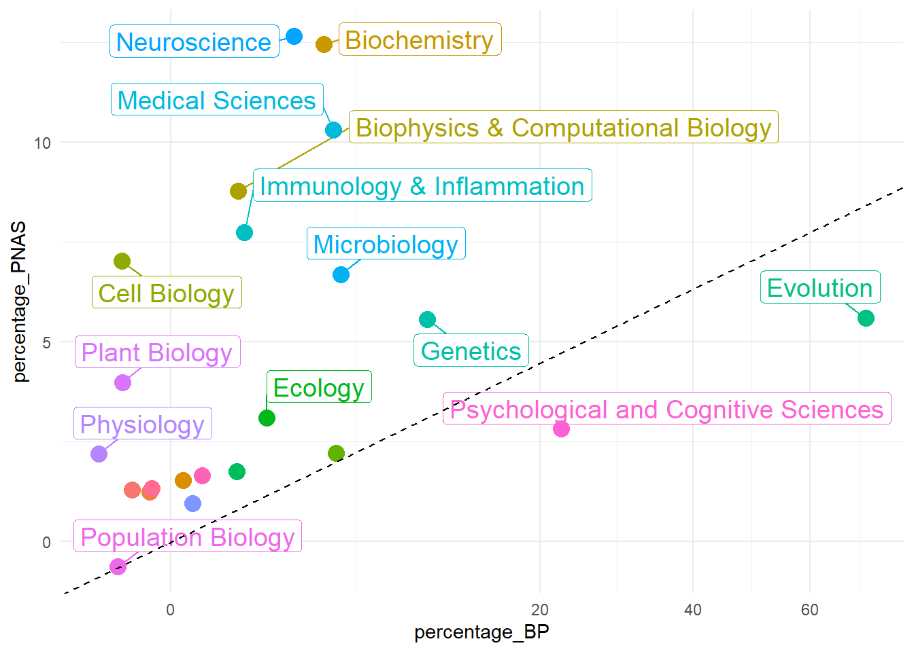

Warning: ggrepel: 8 unlabeled data points (too many overlaps). Consider
increasing max.overlaps

Code
library(readxl)library(gender)library(data.table)library(dplyr)library(ggplot2)library(devtools)library(remotes)library(ggplot2)library(plotly)library(purrr)library(tidyr)library(htmlwidgets)library(tidyverse)library(kableExtra)# LOADING DATA ------------------------------------------------------------dir <-"C:/Users/jacob/OneDrive - Université Laval/Mon ordinateur portable/RSTUDIO/Data/"pins_authors <-read_excel("C:/Users/jacob/OneDrive - Université Laval/Mon ordinateur portable/RSTUDIO/Data/PinS_Table.xlsx")#Plotly configuration. Sys.setenv("plotly_username"="JacobHamelMottiez")Sys.setenv("plotly_api_key"="baYnSFH6jD2mKbP1P62l")# DATA MANIPULATION -------------------------------------------------------pins_authors <- pins_authors %>%separate_longer_delim(Authors, delim =";")pins_authors_unique <- pins_authors |>arrange(Authors) |>unique() # N = 298# SAVING #xlsx::write.xlsx(pins_authors_unique, "C:/Users/jacob/Dropbox/PC/Desktop/RSTUDIO/Data/PinS_Table_authors_unique.xlsx")# MOST PRODUCTIVE Discipline PINS -----------------------------------------PinS_Discipline_year <-read_excel(paste0(dir,"PinS_Discipline_year.xlsx"))PinS_Discipline_year <-data.table(PinS_Discipline_year)PinS_Discipline_year[, N := .N, by = Discipline]# All Yearsb <-ggplot(PinS_Discipline_year, aes(x =reorder(Discipline, N), color = Discipline, fill = Discipline)) +geom_histogram(stat ="count")bb <-hide_legend(ggplotly(b))bb
Code
# Plotly.# api_create(bb, filename = "r-pins-histogram")# Each DecadesPinS_Discipline_year[, N_year := .N, by = .(Discipline, Year)] # This is for each year.time_window <-seq(1970, 2017, 10)# Function for time windowfor(i in1:(length(time_window))){if(time_window[i] ==2010){ PinS_Discipline_year[Year >=2010, start_window :=2010]}else{ PinS_Discipline_year[Year >= time_window[i] & Year < time_window[i+1], start_window := time_window[i]] }}PinS_Discipline_year[, N_window := .N, by =.(Discipline, start_window)] # This is for each decade. #unique(PinS_Discipline_year[, .(start_window,N_window), by = Discipline]) # The decades where there is 0 citation are missing.# Missing values. # g <- ggplot(PinS_Discipline_year, aes(x = start_window, y = N_window, # color = Discipline, fill = Discipline, group = Discipline)) + # geom_point(size = 3) +# geom_smooth(method = "loess")# ggplotly(g)start_window <-seq(1970, 2017, 10)PinS_Discipline_plus <-expand_grid(start_window, unique(PinS_Discipline_year$Discipline)) |>print(n=55)
![]()